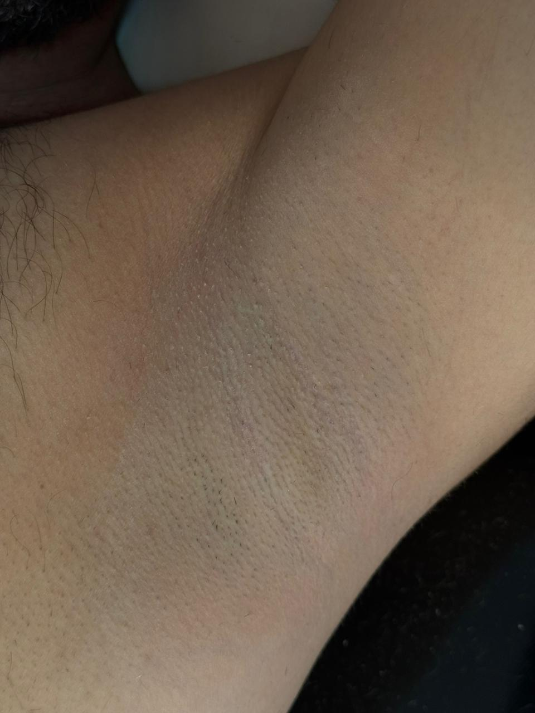
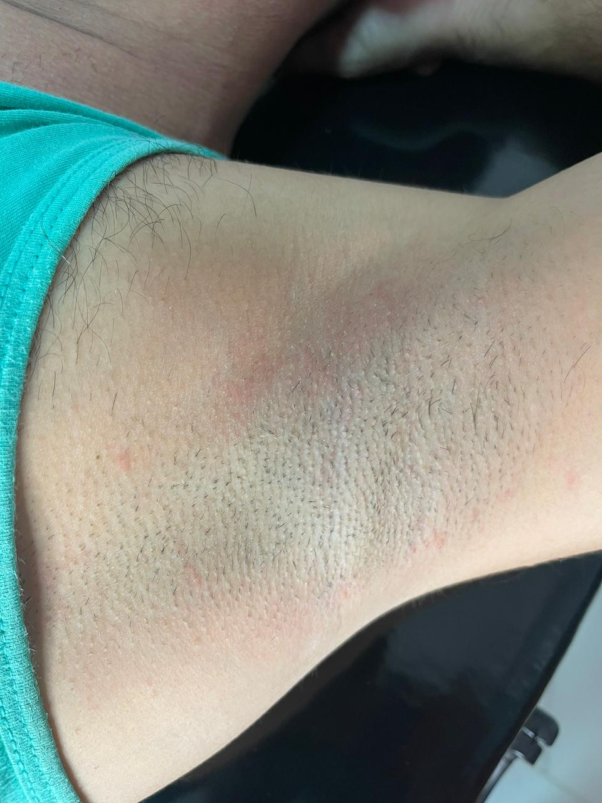
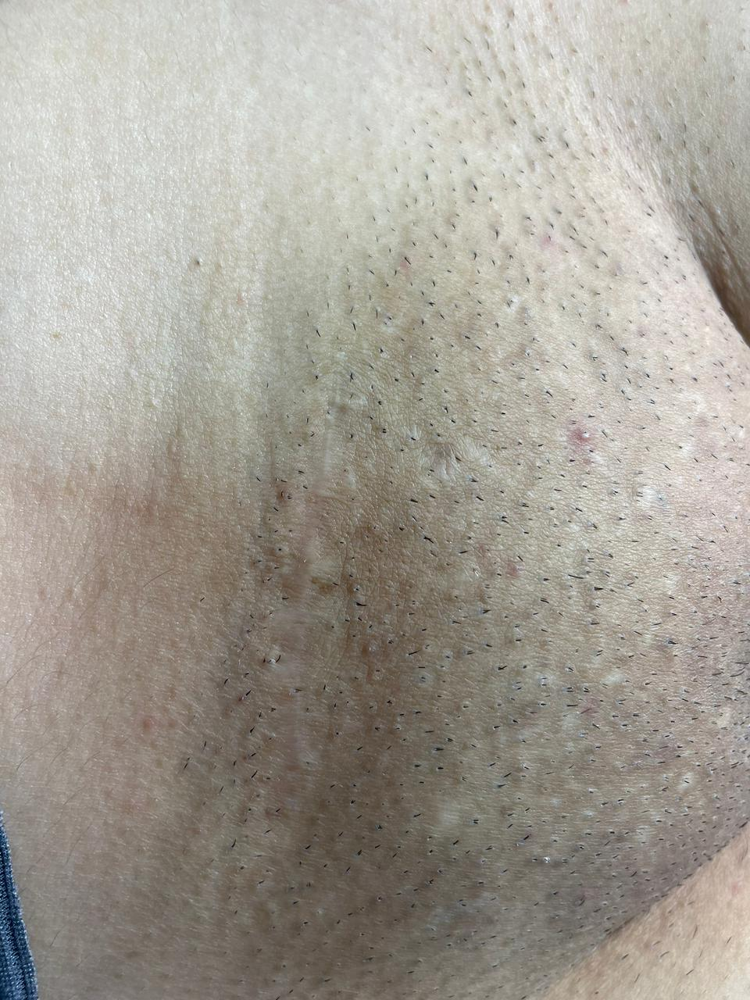
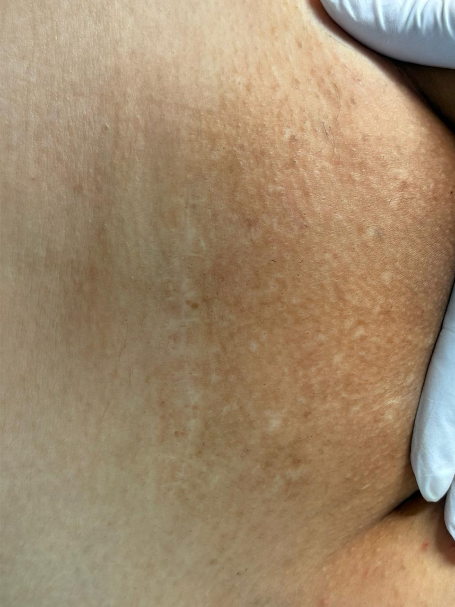

Com a Jheini Pinheiro, enfermeira com mais de 5 anos na área da saúde e quase 3 anos dedicados à depilação a laser — já são centenas de clientes satisfeitas com pele lisa e resultados reais.
Jheini Pinheiro atua na área da saúde há mais de 5 anos. Nos últimos 3, especializou-se em depilação a laser — e desde então já ajudou centenas de mulheres e homens a se livrar dos pelos indesejados de vez.
Cada sessão é conduzida com cuidado, técnica e atenção individual — porque pele não é só estética, é autoestima. Jheini combina o olhar clínico de enfermeira com a prática acumulada de quase 3 anos no laser, garantindo mais segurança e conforto durante todo o tratamento.
Formação em enfermagem aplicada ao laser
Sessões rápidas e confortáveis
Atenção individual em cada atendimento
Resultados reais e comprovados
A depilação a laser é um dos métodos mais modernos e eficazes para a redução dos pelos. O tratamento atua diretamente no folículo piloso, reduzindo o crescimento dos pelos ao longo das sessões.
Resultados visíveis desde as primeiras sessões, com os pelos ficando cada vez mais finos e raros.
Pele sedosa, uniforme e sem os indesejados pelos encravados ou irritações causados por outros métodos.
Diga adeus aos pelos encravados, vermelhidões e foliculite causados pela gilete e cera quente.
Elimine a rotina de depilação frequente. Mais tempo para o que realmente importa na sua vida.
Investimento que se paga ao longo do tempo, com resultados que duram anos com manutenções simples.
Sinta-se mais confiante, livre e à vontade com sua própria pele em qualquer situação.
A depilação a laser é ideal para mulheres e homens que desejam reduzir os pelos e conquistar mais praticidade no dia a dia. O atendimento é voltado principalmente para pessoas entre 18 e 40 anos, que buscam um método eficiente, seguro e moderno.
Que buscam pele lisa, conforto e liberdade
Que desejam praticidade e estética corporal
Que sofrem com irritações de outros métodos
Tecnologia segura para diferentes fototipos
A depilação a laser pode ser realizada em diversas áreas do corpo, com atendimentos femininos e masculinos.
* Não realizamos depilação em área íntima masculina.
Veja os resultados de clientes que já realizaram sessões de depilação a laser com a Jheini.




A satisfação das clientes é um dos maiores motivos de orgulho do nosso trabalho.
Vou mostrar como minha axila está agora. Mesmo tendo faltado 3
sessões, o resultado já está incrível!
Os pelos reduziram bastante, a pele está mais lisa e a diferença é
visível. Estou muito satisfeita com a evolução até aqui!
Um caminho sem volta 😍
E, menina, desde a última sessão já
quase não tem nada!
Trabalho incrível! ❤️
Os atendimentos são realizados em clínicas parceiras, oferecendo um ambiente seguro e confortável para cada sessão.
Ambiente moderno e acolhedor, preparado para oferecer a melhor experiência em cada sessão.
Espaço especializado em estética, com toda a estrutura para o seu tratamento de forma segura e confortável.
As sessões de depilação a laser são realizadas em média a cada 30 dias. Esse intervalo é importante porque o laser age nos pelos que estão em fase de crescimento, e respeitar o tempo entre as sessões ajuda a garantir melhores resultados ao longo do tratamento.
O tempo da sessão varia de acordo com a região escolhida. Em geral, as sessões duram de 5 a 30 minutos. Regiões menores, como axila ou buço, são mais rápidas. Regiões maiores, como pernas ou costas, podem levar um pouco mais de tempo.
Sim, pessoas negras podem realizar depilação a laser. Hoje existem tecnologias modernas que permitem tratar diferentes tons de pele com segurança. Antes de iniciar o tratamento, é feita uma avaliação da pele e do tipo de pelo para ajustar corretamente os parâmetros do laser e garantir eficácia e segurança durante o procedimento.
O número de sessões pode variar de pessoa para pessoa, pois depende de fatores como tipo de pele, espessura do pelo, região tratada e resposta individual ao tratamento. Em média, são recomendadas de 6 a 10 sessões para alcançar uma redução significativa dos pelos. Após esse período, podem ser indicadas sessões de manutenção, caso seja necessário.
A sensibilidade varia de pessoa para pessoa e também depende da região tratada. De forma geral, a maioria das pessoas descreve a sensação como pequenos "beliscões" ou um leve aquecimento na pele. As tecnologias atuais contam com sistemas que ajudam a reduzir o desconforto durante o procedimento, tornando a sessão rápida e mais confortável.
O ideal é evitar exposição solar antes e depois das sessões, pois a pele bronzeada pode aumentar o risco de sensibilidade ou manchas. Caso haja exposição ao sol, é importante utilizar protetor solar diariamente e informar o profissional antes da sessão para avaliar se o procedimento pode ser realizado com segurança.
Sim. É recomendado raspar os pelos com lâmina cerca de 24 horas antes da sessão. Isso ajuda o laser a agir diretamente na raiz do pelo, aumentando a eficácia do tratamento e evitando desconfortos na pele. É importante não utilizar métodos que removem o pelo pela raiz, como cera ou pinça, durante o período do tratamento.
A depilação a laser promove uma redução progressiva e duradoura dos pelos, deixando-os mais finos e com crescimento mais lento ao longo das sessões. Embora os resultados sejam de longa duração, podem ser necessárias sessões de manutenção ao longo do tempo, pois fatores hormonais podem influenciar o crescimento de novos pelos.
Algumas situações podem impedir ou adiar o tratamento: gravidez, infecções ou feridas na região a ser tratada, uso de medicamentos que causam sensibilidade à luz, e pele muito bronzeada no momento da sessão. Por isso, é importante realizar uma avaliação antes de iniciar o tratamento.
Se você deseja reduzir os pelos e ter mais conforto no seu dia a dia, a depilação a laser pode ser a solução ideal. Agende sua sessão e venha conhecer um atendimento profissional, seguro e humanizado.
Agendar sessão no WhatsApp